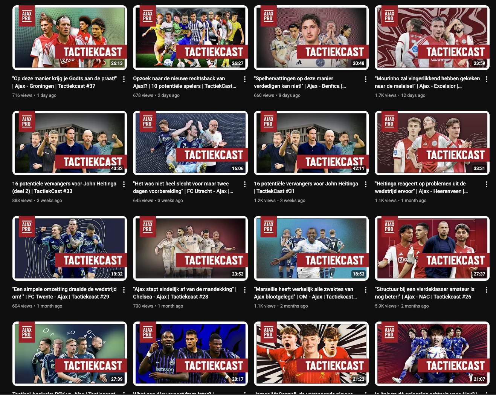

Voor Ajacieden die verder kijken.
Ajax-nieuws, transferpraat, analyses en tools voor Ajacieden.
Opstellingmaker
Maak en deel jouw ideale Ajax-opstelling.
Maak je opstelling zelfAjax transfer nieuws
Kom en praat mee
Bingo Generator

YouTube
Analyses, transfers en wedstrijdpraat.
Tussen de linies
Columns over Ajax, twijfel, frustratie en hoop.
Ajax-contracten
Bekijk de einddatum van alle spelerscontracten.
Alles rond Ajax op één plek
Wat is Ajax Pro?
Ajax Pro is een communityplatform voor Ajacieden. Volg analyses en transfernieuws, praat mee op Discord, bekijk video's en gebruik onze Ajax-tools.
Veelgestelde vragen
Welke Ajax-tools zijn er?
Met de Ajax Opstellingmaker maak en deel je jouw ideale opstelling. Met de Bingo Generator maak je een Ajax-bingokaart.
Waar kan ik meepraten over Ajax-transfers?
In de Ajax Pro Discord praat je met andere Ajacieden mee over transfernieuws, geruchten en wedstrijden.